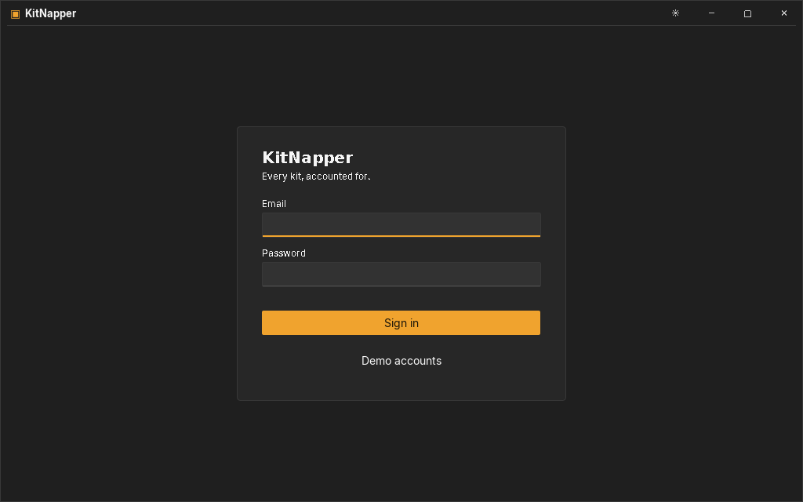

Sign-in · mock auth

Checkout · T … T+14

Penalties · settle or waive

Inventory · add, edit, decommission


The dialogs the demo pass touches, and the inventory screen behind them.

Every screen is thin on purpose: it renders state and forwards events. The rules stay in the services.